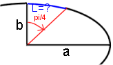
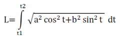

Numerische Integration
y =

x0:
xn:
Anzahl Teilintervalle (max 200):
Graphik
Resultate
Trapez: Simpson:Links: Rechts:
Mitte:
Nach einer Änderung in einem Eingabefeld müssen Sie auf Berechne! klicken. Die Return-Taste genügt nicht.
Die Simpson-Methode benötigt eine gerade Anzahl Intervalle
Anwendungsbeispiele
1) Siehe Beispiel beim Start: Wie gross ist der Inhalt der Fläche unter der Gausskurve von 0 bis 5?Resultat: Simpson-Wert = 0.5 (wäre der exakte Wert für das Integral von 0 bis ∞)
2) Wie gross ist der Umfang u einer Ellipse mit den Halbachsen a = 11 und b = 1.75?
Nimmt man die Parameterdarstellung x=a*sint, y=b*cost (t ∈ [0,2π]), so gilt:

Für dieses (elliptische!) Integral gibt es keine exakte Formel, man muss sich also z.B. mit numerischer Integration behelfen.
Eingabe im Feld Funktionsgleichung: 4*sqrt(11*11*sin(x)*sin(x)+1.75*1.75*cos(x)*cos(x))
bei x0 = 0 und bei xn = 1.5707963267948966 (copy and paste!).
Wählen Sie für die Anzahl Intervalle 40, klicken Sie dann auf 'Berechne!' und Sie erhalten den Simpson-Wert u = 45.528581.
3) Wie gross ist die Bogenlänge L einer Ellipse mit den Halbachsen a = 11 und b = 1.75 zwischen t1=0 und t2=π/4?
= ?
Eingabe im Feld Funktionsgleichung: sqrt(11*11*sin(x)*sin(x)+1.75*1.75*cos(x)*cos(x))
Eingabe bei x0 = 0 und bei xn = 0.785398163397 Wählen Sie Anzahl Intervalle 40.
Sie erhalten den Simpson-Wert L = 3.579792